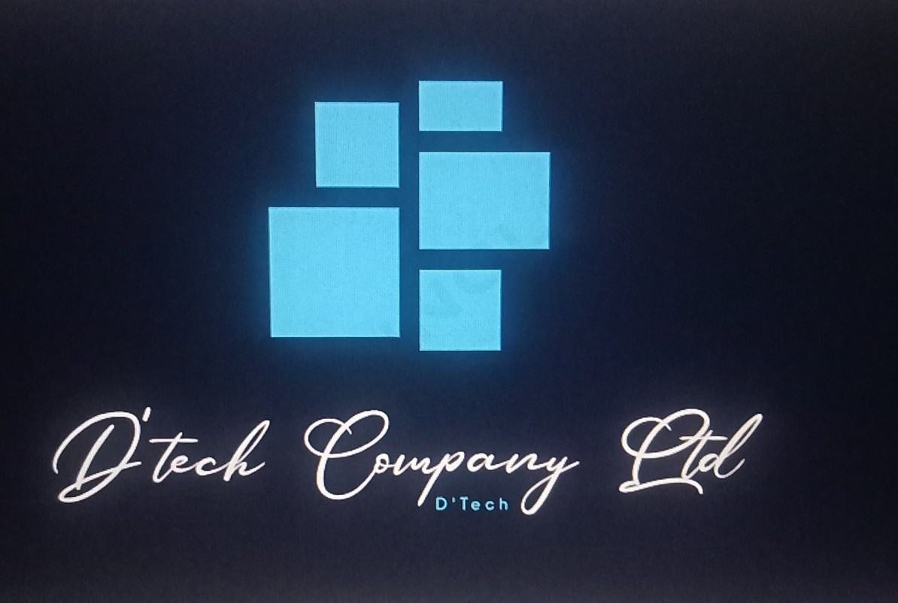

D'Tech Company Ltd was started in 2017 and registered in 2019. We have over the
years built a reputation of providing cutting edge services to enable organisations to manage their
businesses efficiently. Our innovative, approach to organizational needs using affordable and
sustainable IT solutions and services have enabled Communities, Businesses,
NGOs and Government agencies to transform their business processes in a timely and
costs-effective style. We have established a niche for creating exceptional work at all stages of our
services and product development, delivering results that address crucial customer needs.
Our Mission and Values
To empower our clients to achieve their business objectives through the integrated use of sustainable
use of IT solutions .
We apply our core values to all our work and we strive to uphold:
• Professionalism and excellence in service delivery
• Honesty, intergrity and transparency in our dealings
• Commitment to timely, quality and explicit work to ensure customer satisfaction
• Trust and respect with our stakeholders, customers, supplies, staff, shareholders and the community
Our services
• Mobile app development
In mobile app development, we are more than capable of developing systems for quick data surveys or data
collection, and provide mobile services that go beyond the fundamental role of voice communication.
• Software development
We have the capacity and expertise to build platforms and tools that bring together the different component
sub-systems into one to ensure holisyic efficiency and fuctionality.
• Website development
We design database drivers or interactive websites depending on the client requirement and not just how it
looks but how it works and after web design training giving you the power to manage and update your website
regularly.
• IT consultancy
We provide a full range of consultancy services and support to help take the hustles out of your IT
projects. When you cannot find the exact IT solution you are looking for, before turning to a bespoke
solution, we shall advise on how to minimize the risks and get the best out of a new project.
• Business support
We analyze how IT is used in your Organization and advise on how customers can interact with the information
system through the exchange of products or services, how IT can support the products or services
manufactured/assembled in a business process and how your staff can be enabled to do their work.
• Odoo services
We transform your business ideas and goals into implementation plan.
COPYRIGHT 2024-D'TECH COMPANY LTD - APPLICATION OF CONCEPTUAL KNOWLEDGE